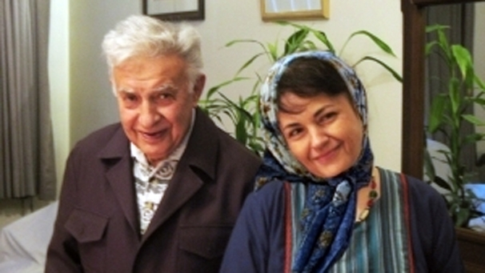

|
|

شیرین عبادی : ریشه این خشونتها را باید در ضعف حکومت دید، باید این خشونت ها فریاد بزنیم
دو شنبه16 خرداد 1390
ریشه این خشونتها را باید در ضعف حکومت دید
تغییر برای برابری - گفتگو حمیده نظامی
مرگ هاله سحابی پژوهشگر قرانی، عضو مادران صلح و فعال ملی – مذهبی، نشانه ی دیگری از مرگ آسان، کشتن آسان و مشروعیت بخشی همه جانبه به اعمال خشونت پلیسی در ایران بود. در باره نقش سحابی ها و نقش زنانی چون هاله سحابی با شیرین عبادی گفتگویی انجام داده ایم که می خوانید
نقش سحابیها در گسترش حرکتهای مسالمت آمیز در ایران را چگونه میبینید؟
این سوال شما را کلی تر جواب میدهم و مایلم به نقش خاندان سحابی در روند دموکراسی در ایران اشاره کنم. مرحوم یدالله سحابی سالها در استبداد شاه مبارزه میکرد و به زندان رفت و پسر او نیز راه پدر را ادامه داد عزت الله دو بار به زندانهای طولانی محکوم شده بود. در زمان پهلو ی و نزدیک انقلاب از زندان آزاد شد و از افرادی بود که برای برپایی حکومت اسلامی زحمت بسیاری کشید اما آن حکومتی که برایش زحمت کشیده بود در عمل انچیزی نبود که از کار در آمد. وقتی متوجه تک روی های جمهوری اسلام شد خودش را از گردونه قدرت کنار کشید آن هم با وجود اینکه بسیار موقعیت ممتازی در جمهوری اسلامی داشت زیرا و او و پدرش از بنیانگزاران بودند و با اینکه سعی کردند که این مرد را ساکت نکه دارند که از مجموعه حکومتی بیرون رود اما حاضر نشد شرف و وجدانش را بفروشد و خارج شد.

او همواره به قصد اصلاح حکومت و سیاستمردان به نفع مردم ایران حرف زد و نوشت. البته این شیوه مورد پسند حکومتی که بر پایه سانسور بنا شده نیست. بنابراین چندین بار گرفتار شد. یکی از این دفعات بعد از تشکیل گروه ملی مذهبیها، متهم به اقدام علیه امنیت ملی شد درحالیکه نه مهندس سحابی و گروه ملی مذهبی ها هیچ گاه در صدد براندازی نبودند بلکه همواره در آرزوی این بودند که ایرانی آباد و آزاد برای جوانان باقی گذارند. به هر حال سحابی در زندانهای متعددی در جمهوری اسلامی تحمل کرد شکنجه فراوان شد و حتی نزدیک به یک سال حبس انفرادی کشید و اما علیرغم تمامی ناملایماتی که حکومت جمهوری اسلامی به او تحمیل کرد هرگز کینه ای به دل نگرفت و تنها انتقاد او و تلاش او برای ساختن ایرانی آباد بود. من افتخار این را داشتم که در کانون مدفعال حقوق بشر از راهنمایی های دلسوزانه مهندس سحابی بهره مند شوم . در اکثر جلسات ما حاضر می شدند و با سخنرانیها و راهنماییهای دلسوزانه خود ما را به فعالیتهای حقوق بشری تشویق میکردند و در شواری ملی صلح که به دعوت من و به ابتکار کانون مدافعان حقوق بشر تاسیس شده بود نیز شرکت کردند. ما از وجود دانشمند ایشان بهره ها بردیم متاسفم که حکومت آنقدر فراموشکار است و آنقدر در بند حفظ قدرت سیاسی است که حتی حاضر نشد بعد از فوت سحابی خانواده او مراسمی را که مایل بودند اجرا کنند.عده ای از ماموران حکومتی جنازه سحابی را دزیدند و میخواستند حتی بدون ادای نماز میت او را دفن کنند که این کار به شدت مورد اعتراض پسر مهندس سحابی قرار گرفت و انها هم مجبور شدند نمازی بخوانند جنازه در میان تدابیر شدید امنیتی دفن شد.
حرکت و مشی مسالمت جویی که سحابیها داشتند در تناقض با برخوردی است که با این خانواده از سوی حکومت شد. از جمله برخورد اخیری که با هاله سحابی شکل گرفت، که در اثر خشونت روانی/فیزیکی جان سپرد، ریشه این همه خشونت چیست؟
ریشه این خشونتهای حکومت را باید در ضعف حکومت دید که به هر شیوه ممکن می خواهد مخالفین اش را خفه کند . در این راستا نه تنها اجازه راهپیمایی و تشکلهای قانونی و مسالمت آمیز و تشکیل احزاب نمیدهد بلکه حتی از یک مجلس ترحیم ساده هم واهمه دارد و برنمیتابد. حتی ازجلسات قران و برگزاری نماز هم وحشت دارد . فراموش نکنیم که یار سحابی ابراهیم یزدی به جرم برگزاری نماز جمعه بی مجوز به زندان رفت و به قدری این پیرمرد بیمار را در زندان نگه داشتند تا مجبورش کردند بنویسد که به دلیل بیماری از دبیرکلی نهضت آزادی کنار میرود. این خشونتهای حیرت آور فقط ضعف حکومت را ثابت میکند.
-با توجه به رابطه نزدیک شما به این خانواده ، نقش هاله سحابی را به عنوان فعال زنان با گرایش به گروه ملی مذهبی چطور میبینید؟
خانم هاله سحابی اطلاعات عمیقی از دین اسلام داشتند و در قران پزوهشهای باارزشی کردند و در این زمینه چندین مقاله و کتاب چاب کرده بودند. ایشان ثابت کرده بودند که قوانین تبعیض امیز که جمهوری اسلامی به زنان تحمیل کرده ناشی از کج فهمی حکومتمداران و فرهنگ پدرسالار افرادی است که بر ما حکومت میکنند و الا با تفسیر درستی از اسلام میتوانیم به برابری زن و مرد معتقد باشیم. ایشان در این زمینه بسیار مطالعه کردند و زحمت کشیدند و من نقش ایشان را در این زمینه بسیار باارزش میدانم زیرا حکومت برای توجیه قوانین تبعیض آمیز فقط و فقط یک موضوع را بهانه میکند و ان اسلام است.افرادی مانند هاله سحابی مشت حکومت را باز میکنند و ثابت میکنند که ظلمی که بر زنان میکنید به خاطر اسلام نیست بلکه به خاطر فرهنگ غلطی است که به آن اعتقاد دارید و در حقیقت حکومت خلع سلاح میشود و به همین جهت افرادی مثل هاله سحابی با وجودی که مسلمان هم هستند بشدت مورد بغض حکومت قرار دارند. از سوی دیگر خانم سحابی معتقد بودند که فقط در یک جامعه ای دموکرات زنها میتوانند برابر زندگی کنند و از همین رو برای دموکراسی در ایران خیلی فعالیت میکردند و به خاطر همین فعالیت ها نیز به زندان رفتند. یادآوری می کنم به خاطر تجمع مسالمت آمیزی که در میدان بهارستان مقابل مجلس شورای اسلامی در اعتراض به برگزاری مراسم تحلیف محمود احمدی نزاد برگزار شده بود شرکت کردند با وجود اینکه این مراسم بسیار مسالمت امیز بود اما دستگیر شدند به 2 سال زندان محکوم شدند خانم سحابی خودش با پای خود رفت و خود را به زندان معرفی کرد در زندان بودند که پدر بزرگوارشان بیمار شدند و با استفاده از قانون توانستند چند روزی به مرخصی بیایند تا پدر را ملاقات کنند که متاسفانه این اتفاق افتاد.
-با وجود فعالان برجسته ای چون هاله سحابی در طیف ملی مذهبی ها، همواره ساختار مردانه در طیف ها و گروه های سیاسی در ایران بیشتر غالب بوده . به نظر شما نفش هاله سحابی و رویکرد برابری طلبانه او چقدر در برهم زدن این مناسبات در طیف ملی مذهبی ها موثر بوده است؟
گروه ملی مذهبی کاملا جنبه مردانه نداشت بلکه تعدادی زن از جمله هاله سحابی و مرضیه مرتاضی لنگرودی عضو آن بوده اند . گروه ملی مذهبیها اعتقاد به برابری حقوق زن و مرد دارند و بنابراین این مسئله که اینها یک جو مردانه هستند به این صورت مسئله را نگاه نمیکنم. ولی به طور کلی خانم سحابی بر این اعتقاد بود که در کلیه فعالیتهای اجتماعی خصوصا در سیاستگزاریها دخالت مستقیم داشته باشند و همواره گله مند بودند از اینکه زنها در کلیه مبارزات اجتماعی حضور فعال داشتند اما هنگام پیروزی آنها را پشت در گذاشتند و حقوق آنها فراموش شد.
-نقش ما به عنوان فعالان جنبش زنان چیست و چه رویکردی را باید در مقابل این خشونت در پیش گیریم؟ و به طور مشخص جنبش زنان به عنوان جنبشی مسالمت آمیز، چه رویکرد نظری و چه راه کار عملی ای را در مبارزه علیه چنین خشونتی میتواند در پیش گیرد؟
مهمترین مسئله این است که این خشونت را فریاد بزنیم و بگوییم چه اتفاقی افتاده و سکوت بدترین راه حل است. در وهله بعد نگذاریم افرادی که بیگناه و مطلومانه در راه اهدافشان کشته شدند از یاد ببروند . بدین مناسبت من تاکید میکنم که تاریخ جنبش زنان و مبارزات زنان را باید تدوین کنیم ما احتیاج به تاریخ زنان و موضع زنان داریم تا تمامی این حوادث در آن به صورت مستند ثبت شود. امیدوارم روزی که دموکراسی به ایران بیاید به یاد بیاورند مبارزات زنان را و یکبار دیگر زنان را پشت در نگذارند مثل اتفاقی که در انقلاب مشروطیت افتاد و در انقلاب اسلامی افتاد.